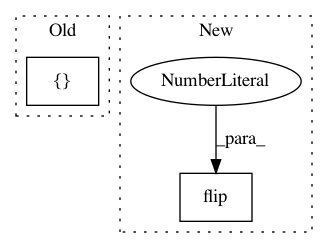

ee602b6f68f0bdd19f449a86955697f8f0a2d54c,gluoncv/data/transforms/video.py,VideoTenCrop,forward,#VideoTenCrop#Any#,304
Before Change
bl = clips[h - oh:h, 0:ow, :]
tr = clips[0:oh, w - ow:w, :]
br = clips[h - oh:h, w - ow:w, :]
crops = nd.concat(*[center, tl, bl, tr, br], dim=2)
crops = nd.concat(*[crops, nd.flip(crops, axis=1)], dim=2)
return crops
After Change
new_clips.append(np.flip(center, axis=1))
new_clips.append(np.flip(tl, axis=1))
new_clips.append(np.flip(bl, axis=1))
new_clips.append(np.flip(tr, axis=1))
new_clips.append(np.flip(br, axis=1))
return new_clips
In pattern: SUPERPATTERN
Frequency: 3
Non-data size: 2
Instances
Project Name: dmlc/gluon-cv
Commit Name: ee602b6f68f0bdd19f449a86955697f8f0a2d54c
Time: 2019-09-21
Author: yizhu59@gmail.com
File Name: gluoncv/data/transforms/video.py
Class Name: VideoTenCrop
Method Name: forward
Project Name: rtqichen/torchdiffeq
Commit Name: d041ccdc8112fa0d62ee9ad4ab4cecf0fd8e2cf3
Time: 2020-07-25
Author: 33688385+patrick-kidger@users.noreply.github.com
File Name: torchdiffeq/_impl/adjoint.py
Class Name: OdeintAdjointMethod
Method Name: backward
Project Name: yzhao062/pyod
Commit Name: f7274c1889e6c31ab89dc0409fa2ac92e6f01228
Time: 2019-03-11
Author: yalmardeny@tssg,org
File Name: pyod/models/sod.py
Class Name: SOD
Method Name: _snn